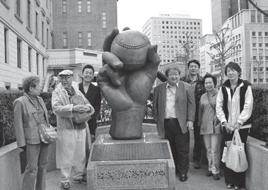
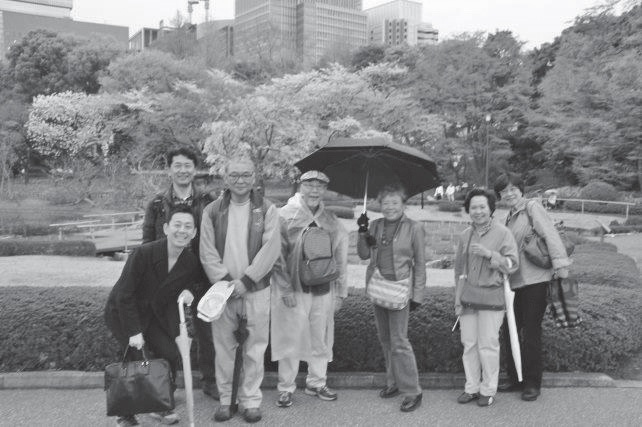
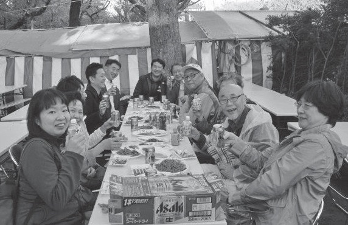

１ 大江戸散歩隊の発足
昨年(2013年)3月、東京玉翠会に「大江戸散歩隊」が発足しました。この散歩隊は、同窓生やその家族と一緒に、江戸の町を散歩しようという会です。２ 品川宿散歩と屋形船の花見
昨年(2013年)の3月30日には、大江戸散歩隊のキックオフイベントとして「旧東海道品川宿」の宿場跡を散歩と「屋形船の観桜クルーズ」をしました。品川宿場散歩、目黒川の満開の桜を堪能した後、50 名で屋形船に乗船し、てんぷらなどを食べながら、俳句作り、お絵描き、「舞子」ちゃんの歌、丸吉先輩のハーモニカによる「春」の歌の合唱の宴会で盛り上がり、隅田川の桜を船上からの風流な花見ができました。
３ 根津神社のつつじと谷中散策
続いて(2013年)４月20 日に、根津神社でつつじの満開を堪能しました。井上栄隊員（33卒）が、つつじには一つの弁に斑点模様があることを発見し、隊員一同は井上斑点と呼ぶことにしました。つつじの斑点は、蜜蜂を呼び込むための模様とのことです。
散歩には、いろんな発見があります。 つつじの散策後は、根津の大名時計博物館で大名時計を見学し、ぼたんの花の咲き誇る谷中のお寺の散歩をし、上野にでて食事を楽しみました。
４ 亀戸天神の藤見物と横十間川散歩
(2013年)５月３日の連休には、亀戸天神で藤見物をしました。黄色の藤があり、その説明などを受けたりしながら、境内散歩し、門前の「船橋屋」で「名物くず餅」をみんなで食べました。
亀戸天神から横十間川の遊歩道を、ボート練習の中学生に声をかけながら、猿江恩師公園まで散策しました。
５ 桜桃忌ひとり散歩
(2013年)6月16日神崎隊員（52卒）から、桜桃忌（6月19 日）に合わせて、三鷹駅から太宰治の下宿跡、入水跡、墓所の禅林寺までの７キロの散歩の誘いがありました。折悪しく都合がつく隊員がないままに、神崎隊員の一人散歩が挙行されました。
このような、いついつ私はこんな散歩をしますので、一緒に散歩しませんかという誘いをして、仲間がなくても実行される散歩も、大江戸散歩隊の一人散歩と言う趣向の散歩行事です。
近い将来は、多数の隊員からのメールでの散歩の誘いがあり、そのような誘いに適宜参加するという散歩方式も一つの活動方向として考えられています。
６ 浅草ほうづき市散歩
外丸隊員（56卒）の案内で、７月10日（水）夕方より、上野公園の精養軒ビアガーデンで夕焼けを見ながらの、仕事終りのビールを飲んで、一息いれてから、浅草ほうずき市散歩が行われました。今年も夏にはビールを飲んでの散歩が期待されています。
７ 今春の花見

日本野球発祥の地 (2014年)今年の4月6日には、昼過ぎ学士会館に木村隊長以下10名の散歩隊員が集合。会館前に記念像があり、元野球部の原木隊員も、そこが日本の野球発祥の地を知らないとのことで全員で記念撮影をしてから散歩出発（→）。
本日の旧江戸城のサクラ散歩は、まず平川門から東御苑に入城し、二の丸公園に。実に見事な枝垂桜が咲いていました（↓）。
二の丸公園ではサクラ以外にも春の花を見ながら「これ何の花や。」「ここに書いとるわ。『きぶし（木五倍子）』らしいで」「あれは？」「何も書いてないから分からんな」と大声でのワイワイガヤガヤの讃岐語散策です。

江戸時代の同心番所や百人番所を見て、松の廊下跡から江戸城天守閣跡の天守台に。天守台の近くにはサクラだけでなく、桃のイメージの桃華楽堂の前には、紅色と白色の桃の花も満開でした。
東御苑を北桔梗門から出て再び江戸城北の丸跡の公園に。乾門の前には、数樹の紅枝垂れサクラが満開。
北の丸公園では国立近代美術館工芸館（旧近衛師団司令部の建物）付近のサクラや対岸の千鳥ヶ淵の満開のサクラを見つつ、武道館から田安門（旧田安家の門―重文）に出て、千鳥ヶ淵の桜を堪能しました。
まさにサクラ・桜・桜でした。

靖国神社・お茶屋 靖国神社では長尾・土田隊員が手配した茶屋で満開の桜に囲まれて、全員で大宴会。宴会途中で、池内隊員・小比賀隊員も参加し、大盛り上がりでした（↓）。
夕方にやや寒くなり、神社を出て、近くの飲み屋で再び大宴会。満開の花と盛大なる宴の春の花見散歩でした。
８ 散歩隊参加希望の方へ
こんな散歩隊の活動状況ですが、メタボ対策で歩かねばならない人も、歩き好きの方も、誰でも一緒に散歩したいと思う玉翠会メンバーは、散歩隊のメーリングリストに登録すれば、散歩案内が配信されます。また、自分が企画する散歩（別に江戸に限りません）についても、隊員に参加を呼びかけ一緒に散歩することができます。皆さんも、一緒に、讃岐弁で大笑いしつつ、大江戸散歩を楽しみませんか。
参加申込みは、下記にメール下さい。
連絡先
長尾みどり（S53年卒）
外丸香代（S56年卒）
池内久徳（S56年卒）
原木俊哉（S60年卒）
岡崎 洋（S37年卒）